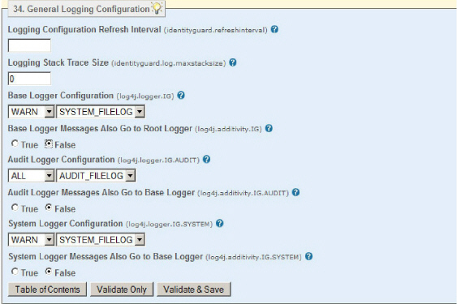

|
IdentityGuard Server 13.0 Administration Guide |
|
IdentityGuard Server 13.0 Administration Guide |
Use the Properties Editor to modify the default Entrust IdentityGuard logging properties. For example, if you chose to log to Syslog when you installed Entrust IdentityGuard, you can reconfigure to log to a file, or, if you chose to log to a file, you can reconfigure to log to Syslog instead. You can change the location logs are sent to, the log file size, and the number of old log files to keep.
You can change the defaults that Entrust IdentityGuard uses to define loggers (the type and level of messages to be logged), to set the appenders (where the logs are to be written), and to configure the layouts (the format used for writing the logs).
The message level of each of the three loggers can be set to one of ALL, DEBUG, INFO, WARN, ERROR, FATAL and OFF, where ALL produces the most messages and FATAL the least. The message level sets the lowest level of message to log; for example, WARN provides messages of WARN, ERROR and FATAL status. Select OFF to stop all messages from the applicable logger.
For descriptions of log file properties, see:
● General Logging Configuration
Note: Changes to log settings take effect in the time period set on the Logging Configuration Refresh Interval property. You do not need to restart Entrust IdentityGuard when you change logging properties.
To change general logging properties
1. Start the Entrust IdentityGuard Properties Editor. (See Log in or out of the Properties Editor.)
2. On the Table of Contents, click General Logging Configuration.

3. Edit the property settings as required. Click + to see the property descriptions.
4. Click Validate & Save.

 Logging
Configuration Refresh Interval
Logging
Configuration Refresh Interval